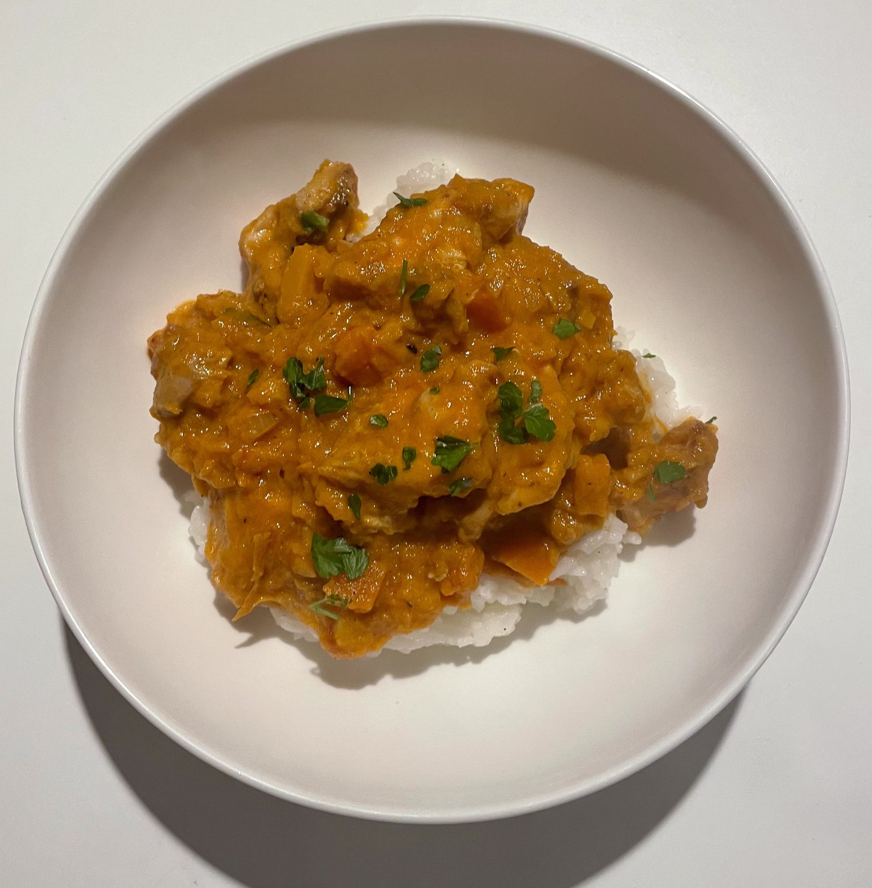

A comforting curry built on a simple homemade spice blend — coriander, cumin, turmeric, ginger and a touch of cinnamon — with seared chicken thighs, butternut squash and carrots simmered in a coconut-tomato sauce.
Mashing some of the softened squash into the sauce thickens it naturally, no cornflour needed, while the rest of the pieces stay intact for texture.
Serve over rice, and it holds up well for meal prep — keeps 4-5 days in the fridge, or freezes well.

5 servings
45–55 mins • High Protein • Base: 5 servings
High protein from the chicken thighs supports muscle repair and keeps you full, butternut squash and carrots bring fibre and beta-carotene, and the homemade spice blend adds warmth and antioxidants without any refined sugar.